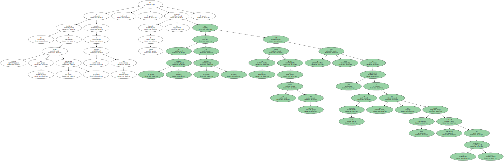
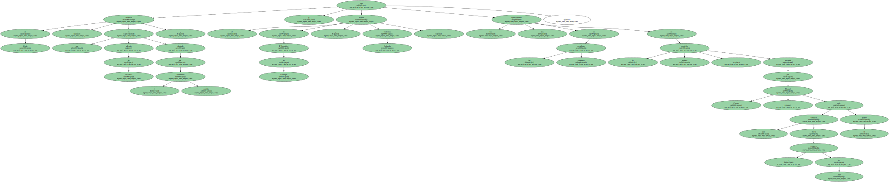
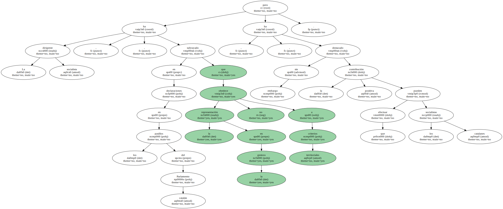
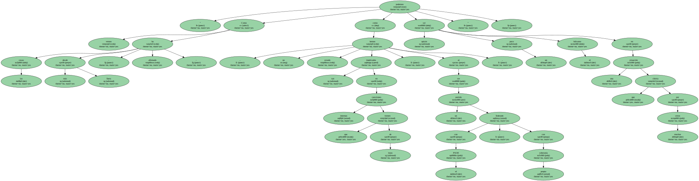
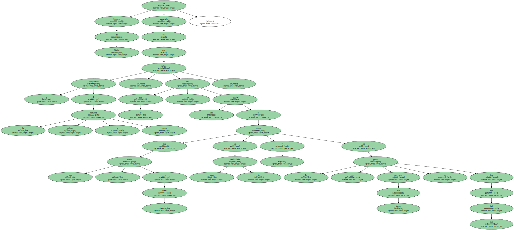

La alcaldesa de Santa Coloma de Gramenet ( Barcelona ) y miembro de la gestora del PSOE , Manuela de Madre , ha afirmado hoy que el PSC puede actuar de " bálsamo " y de " bisagra " en la crisis del partido dado que se trata de una organización con soberanía propia y que no ha estado hasta ahora demasiado implicada en los problemas internos.
Manuela de Madre , que además de alcaldesa es diputada en el Parlamento catalán , y el alcalde de L'Hospitalet de Llobregat , Celestino Corbacho , son los dos representantes de los socialistas catalanes en la comisión política , presidida por Manuel Chaves , que debe conducir el partido hasta el congreso de julio.
La dirigente socialista , en declaraciones en los pasillos del Parlamento catalán , ha subrayado que la representación en la gestora no obedece a criterios territoriales pero , sin embargo , ha destacado la contribución positiva que pueden efectuar los socialistas catalanes.
" Como vemos las cosas más desde fuera - ha afirmado - , como no hemos estado tan implicados en cuestiones internas que vienen de lejos , al ser un partido federado con el PSOE , con soberanía propia , quizás podemos ser un poco el bálsamo en una situación que chirría por muchos sitios ".
Según Manuela de Madre , " podemos dar tranquilidad , hacer de bisagra y también aportaremos lo que creo que aportará casi todo el mundo : voluntad , rigor , sensatez y ganas de resolver los problemas ".

Manuela de Madre ha destacado que la composición de la comisión política o gestora " refleja que lo que hay es una voluntad de contar con todo el mundo en el PSOE , con todas las sensibilidades y con la gente que representa alguna cosa o tiene algo que decir ".
En este sentido , ha subrayado que se ha conseguido esta pluralidad en la composición de la gestora porque " ésta ha sido la voluntad de Chaves y de mucha gente y esto es positivo porque es algo que no pasó en el último congreso del PSOE ".